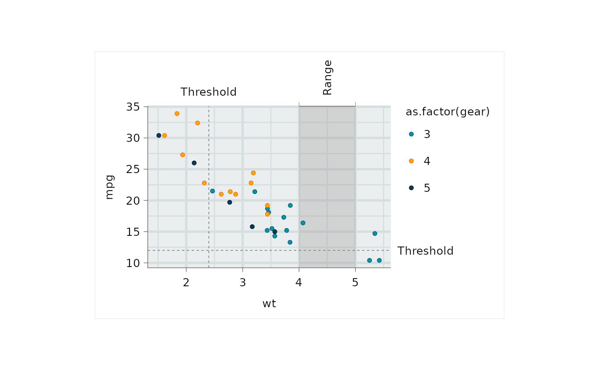

Secondary axis optimised for text annotations
Usage
sec_axis_text(
breaks = ggplot2::waiver(),
labels = ggplot2::derive(),
name = NULL,
guide = ggplot2::guide_axis(theme = theme_sec_axis_text()),
...
)Arguments
- breaks
One of:
NULLfor no breaksggplot2::waiver()(default) to inherit breaks from the primary axisA numeric vector of break positions
A function that takes the scale limits as input and returns break positions (e.g.
\(x) mean(c(x[2], 32)))
- labels
One of:
ggplot2::derive()(default) to derive labels frombreaksA character vector of labels, the same length as
breaksA function that takes break positions as input and returns labels
- name
The name of the secondary axis. Use
ggplot2::waiver()to derive the name from the primary axis, orNULL(default) for no name.- guide
A guide object used to render the axis. Defaults to
guide_sec_axis_text(), which usestheme_sec_axis_text()to make transparent ticks and lines by default.- ...
Additional arguments passed to
ggplot2::dup_axis().
Value
A AxisSecondary object for use in the sec.axis argument of
scale_x_continuous() or scale_y_continuous().
Examples
library(ggplot2)
library(dplyr)
set_theme(
ggrefine::theme_grey(
panel_heights = rep(unit(50, "mm"), 100),
panel_widths = rep(unit(75, "mm"), 100),
)
)
mtcars |>
ggplot(aes(x = wt, y = mpg, colour = as.factor(gear), fill = as.factor(gear))) +
scale_colour_discrete(palette = blends::multiply(get_theme()$palette.colour.discrete)) +
#clip = "off" is required for axis_text, axis_ticks and axis_bracket
coord_cartesian(clip = "off") +
#reference lines and shade
ggscribe::reference_line(xintercept = 2.4) +
ggscribe::reference_line(yintercept = 12) +
ggscribe::panel_shade(
xmin = 4,
xmax = 5,
) +
#top axis
scale_x_continuous(
sec.axis = ggscribe::sec_axis_text(
breaks = c(mean(c(4, 5))),
labels = c("Range"),
guide = ggscribe::guide_sec_axis_text(
angle = 90,
)
)
) +
ggscribe::axis_bracket(
position = "top",
breaks = c(4, 5),
) +
ggscribe::axis_text(
position = "top",
breaks = c(2.4),
labels = c("Threshold"),
) +
#right axis
ggscribe::axis_text(
position = "right",
breaks = 12,
labels = "Threshold",
) +
#'geom
geom_point() +
#annotations fit plot
theme(plot.background = element_rect(colour = "grey92"))
